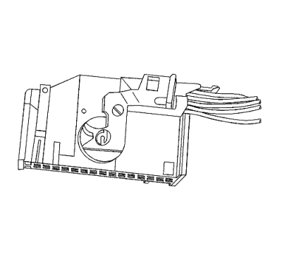
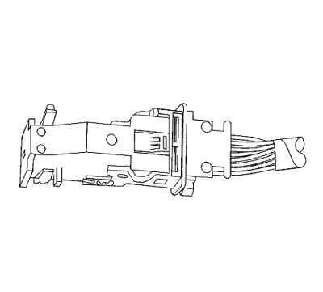
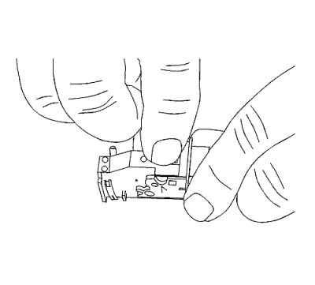
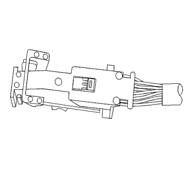
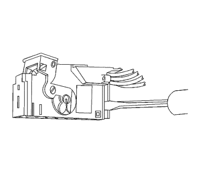
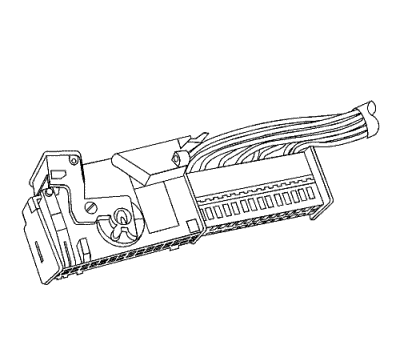
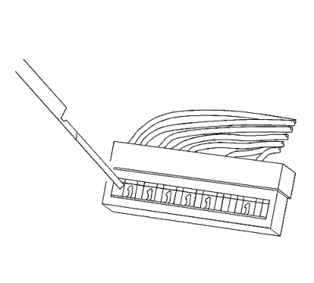

Conectores Tyco/AMP — Módulo de la puerta
Herramientas especiales
Si desea informarse sobre herramientas regionales equivalentes, consultar Herramientas especiales .
Procedimiento de desmontaje

Vista lateral del conector.

Vista superior del conector.
- Coloque la palanca auxiliar y el bloqueo en la parte superior del conector.

- Mientras pulsa el bloqueo, tire de la palanca pasado el bloqueo.

- Separe el conector del componente.

- Sitúe las lengüetas de bloqueo de la tapa en la parte posterior del conector. Utilice una herramienta pequeña de punta plana para liberar las lengüetas de bloqueo. Repita este procedimiento con la otra lengüeta de bloqueo.

- Una vez que las lengüetas de bloqueo están liberadas, deslice el conector interior fuera de la parte trasera de la carcasa del conector.

- Utilice la herramienta EL-38125-12A para liberar los terminales presionando en la espiga.
- Mientras mantiene en su sitio la herramienta de desmontaje, retire con cuidado el cable de la parte trasera del conector. Recuerde siempre que nunca debe utilizar la fuerza a la hora de retirar un terminal de un conector.
Reparación de cable con terminación
- Extraiga el terminal.
- Encuentre el cable con terminación adecuado.
- Utilice los casquillos de empalme adecuados en función del tamaño.
- Consultar Empalme de hilos de cobre usando casquillos de empalme .
| © Copyright Chevrolet Europe. All rights reserved |